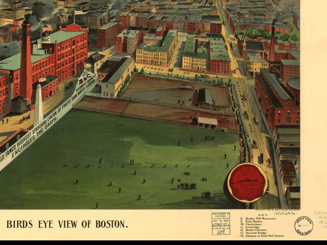

| Boston, Massachusetts - 1902 |
|---|
 |
| Bird's eye view of Boston. [Compliments of] Beach
& Clarridge Co. of Boston.
Geo. H. Walker & Co. CREATED/PUBLISHED Boston, Geo. H. Walker & Co., c1902. NOTES Indexed for points of interest. REFERENCE LC Panoramic maps (2nd ed.), 279.1 |